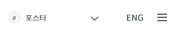

-
 설치목적
긴급상황센터는 감염병 위기상황의 조기인지(early detection)와 신속대응(rapid response)을 통해
설치목적
긴급상황센터는 감염병 위기상황의 조기인지(early detection)와 신속대응(rapid response)을 통해
감염병 확산을 차단하여 피해를 최소화
모든 감염병 정보를 통합적으로 관리하고, 유관기관과 협력하여 현장 대응을 지휘, 통제 및 지원
- 기능
24시간 긴급상황실 운영을 통해 국내외 감염병 상시 감시・분석, 대응 및 국내외 공조 강화
위기시 상황평가 및 즉각대응팀 투입, 유관기관 협조 등 지휘통제
신종감염병 메뉴얼 개발 및 훈련, 향바이러스제・격리병상 등 자원 비축, 생물테러 등 위기 대비・대응
- 조직소개
상시정보수집・분석-> 위기평가 -> 신속대응 판단 -> 역할 조정・지원 과정이 유기적으로 연계되도록
부서 간의 업무 협조 체계 구축
위기대응생물테러총괄과, 검역지원과, 자원관리과, 위기분석국제협력과, 신종감염병대응과로 구성되며,
위기대응생물테러총괄과는 24시간 긴급상황실 운영
(흐름도) 24시간 상황실 운영을 통하여 국내・외 감염병 정보를 상시 수집 -> 감염병 살생에 대한 상시 대응
체계 유지 -> 감염병 위기상황 감지 시 신속히 위기 수준 평가 -> 현장 초동 대응을 위한즉각대응팀 파견 ->
현장 상황 지휘 통제 -> (유관기관 및 전문가와 공유하여 협력)